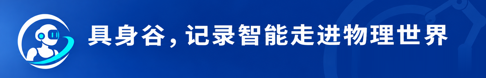
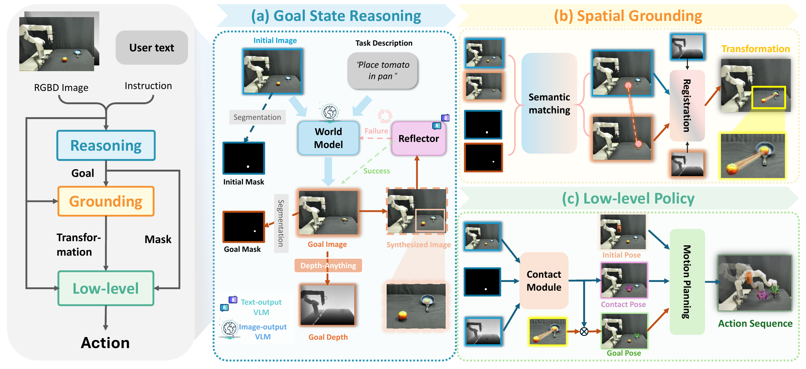
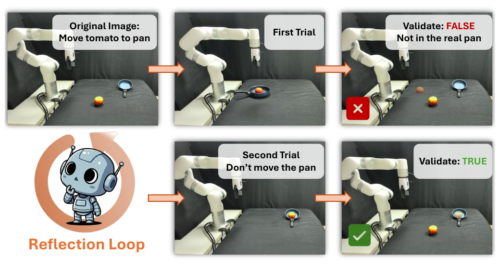
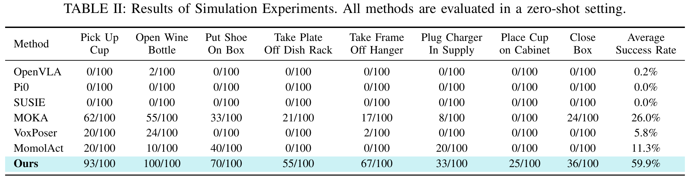
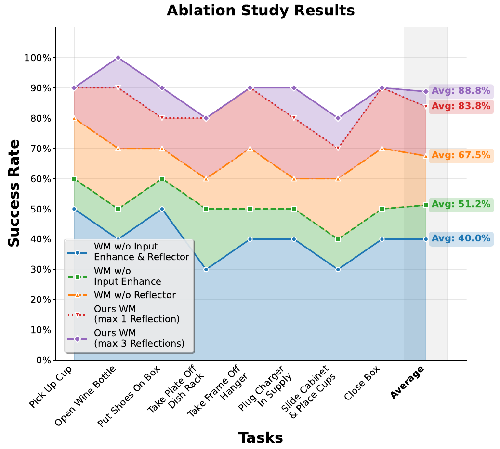
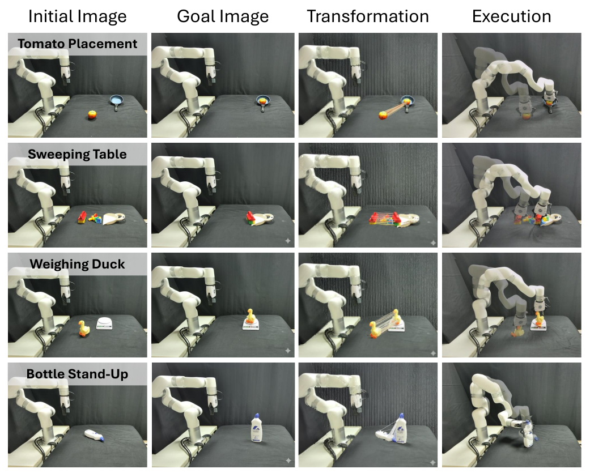
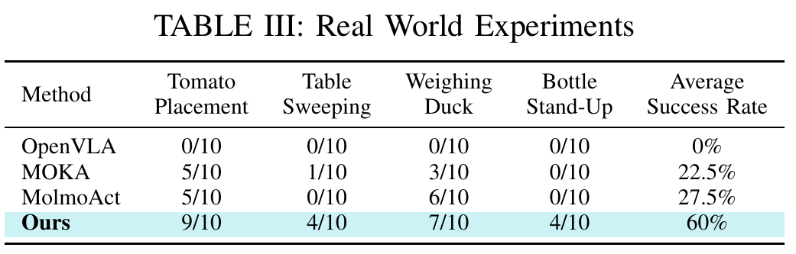

Goal-VLA 深度解读：从一张目标图，到机械臂的可执行轨迹
把番茄放进锅里，听起来只需要告诉机械臂两个位置。细想却有三个问题：这句话说的是哪个番茄、哪口锅？番茄移过去以后，应该以什么姿态落在锅里？夹爪从哪里接触番茄，怎样绕开锅沿？第一个问题依赖对图像和语言的理解，第二个需要把目标变成有尺度的空间约束，第三个要结合机械臂自身的几何与运动范围。只靠一条能看懂指令的模型，未必能同时解决这三个问题。
Goal-VLA 给出了一种分工方式。让图像生成式视觉语言模型（VLM）先画出任务完成后目标物体的样子，再从生成图与真实观测中求物体的三维变换。规划器据此选择接触位姿并生成轨迹。这项工作的研究问题是：物体的三维状态能否作为语义推理和动作执行的接口，使系统在没有任务专用微调的条件下完成新任务？
为什么让系统先想象任务结果
端到端视觉语言动作模型（VLA）直接把视觉和文字映射到动作。对于操作任务，模型要从成对的指令、图像、动作中学会把场景变化和某种机器人动作对应起来。作者指出，这类配对数据很难覆盖足够多的场景、任务和机器人。本来已经能识别锅、番茄和容纳关系的视觉语言模型，也未必见过眼前这台机械臂把番茄放进这口锅的动作。
分层方案可以让上层模型给出目标、下层策略负责动作，难点转到了两者交换什么信息。像 MOKA 这样的方案把关键点交给下游，几点位置有助于指示操作在哪里发生，但可能不足以说明物体该怎样转动。像 SUSIE 这样生成子目标图的方案给出了更丰富的视觉线索，下层仍需要具备把图映射成动作的能力。VoxPoser 用空间价值图表达目标，规划器的输入更直接，价值图是否准确仍取决于高层的空间推理。这些方法的代表性差异来自论文相关工作和表 I，具体基线表现见后文。
Goal-VLA 保留生成图所能表达的全局关系，再把需要移交给低层的目标缩小到物体。作者称图像生成模型为 Object-Centric World Model（面向物体的世界模型）。给它当前彩色图像和指令，它输出任务完成后的单帧场景。语义模块可以借整张图检查参照物，低层则以目标物体的旋转和平移为几何约束，结合当前场景和机器人能力规划动作。

一张生成图如何变成夹爪目标
先把任务描述变成可检查的目标图
目标状态推理（Goal State Reasoning） 接收彩色图像 I 和原始指令 L。论文以 Gemini 2.5 Pro 为例，先让文本输出模型读取当前图片和指令，将原始指令补充为适合图像生成的提示。随后由 Gemini 2.5 Flash-image（Nano Banana）结合提示和输入图像生成候选目标。输入增强的作用，是把依赖眼前场景的约束显式带到生成阶段，让图像模型有机会保持相关物体与背景的关系。例如，任务要求番茄进入眼前的锅，锅的位置就是解读结果所必需的场景参照。
生成图可能看起来正好满足指令，却改了场景里本来不该动的东西。这一错误在图 3 里很具体：生成模型同时挪动了番茄和锅，单看结果图，番茄仍然在锅里。真正的机器人面对的却是原地的锅，按照候选图里的番茄位置运动，会把番茄送往错误的位置。只检查生成图是否符合字面指令，检查模型很容易接受一个建立在改动背景上的目标。
通过合成进行反思（Reflection-through-Synthesis） 把这个检查转回原始场景。系统用 Grounded SAM 从候选图中抠出目标物体，将其半透明叠加到最初的实拍图上。担任检查器的 Gemini 2.5 Pro 读取合成图、原始指令和当前增强提示，决定接受候选，或返回修订提示给下一轮生成。图 3 第一次叠加后，候选番茄落在原来锅的外面。修订强调保留锅的位置，第二轮示例才通过检查。循环在通过检查或用尽预设轮数时停止。达到轮数上限仍未通过时，算法 1 未交代后续处理。

送往下一步的材料包括目标彩色图 I′、初始与目标图中的物体掩码 M 和 M′，以及目标图的深度估计 D′。掩码由 Grounded SAM 获得，Depth Anything V2 给出候选目标的相对深度。此时已经能回答任务结束以后“应该看到什么”，要得到实际空间中“物体移了多少”，还需要用输入相机测得的真实深度 D 标定生成图。
给想象中的物体找到三维位置
空间定位（Spatial Grounding） 要解决两项误差：生成模型可能改写物体纹理与细节，生成图的深度也没有真实相机的度量尺度。第一项使像素跟踪或光流容易找错位置，第二项使两帧点云的距离不可直接比较。系统先用语义对应找点，再借静止背景校准深度，最后对目标物体做配准。
语义匹配使用 Geo-Aware 为初始图和目标图提取逐像素特征。对初始图中的像素，式 1 选择目标图里余弦相似度最高的特征所在位置。分子是两处特征的点积，分母用各自长度归一化，得分衡量的是特征方向有多接近。这样，即使瓶身光泽或局部颜色变了，仍有机会将初始与目标图中承担相同几何角色的区域配对。它依赖两帧特征的对应质量，物体对称、外观变形或遮挡都可能使对应关系不唯一。
深度配准把初始实测深度 D 当成标尺。系统先排除任一帧掩码覆盖的像素，再按式（2）在共有背景上最小二乘拟合 D ≈ s₁ × D′ + b。式（3）把比例 s₁ 和偏移 b 应用到整张预测深度图 D′。想象番茄从左边移到右边，如果只排除左边的旧位置，右边的新番茄也会被拿来当作标尺。相机视角和背景足够稳定时，这一步校准的是整图的尺度和偏移。
系统再把匹配像素投到三维空间，得到初始对象点 P 和目标对象点 P′，剔除距离变化可忽略的对应点。论文用 Umeyama 算法拟合式（4）的相似变换 s₂ · P′ = RP + t。
可以把这一步理解为用两组对应的瓶身点对齐物体。先让目标点云的尺寸和实物可比，再看当前瓶子要转多少、移多远。式里的 s₂、R 和 t 由同一次配准估计。控制器接收的是 R 和 t，分别表示旋转和平移。
从对象变换接到真实的末端执行器
低层策略（Low-level Policy） 拿到初始 RGB-D 观测、物体掩码和三维变换，需要确定在哪里接触、接触后去哪里、机械臂如何到达。接触模块从初始物体点云表面采样候选位姿，按局部表面法向定向，再用姿态约束和末端执行器几何排除碰撞候选。剩余候选按任务相关的几何规则评分，得分最高的位姿进入规划。到这一阶段，原来一句“放进锅里”已经被具体化为从当前场景取出的接触点和方向。
给定接触位姿，论文假设接触后物体相对夹爪的位姿保持不变。若手抓得稳，便可以把物体从初始到目标的旋转和平移施加到夹爪的接触位姿，得到夹爪的目标位姿。仿真用内置采样式规划器插值生成轨迹，真机用采样式规划器在机器人关节配置空间中寻找可行路径。高层生成模型无需读入每种机器人的动作坐标，下层规划器可按自身的关节、末端几何与碰撞条件处理目标。夹持滑动、工具与接触面分离，或需要不断改变接触的任务，会使这个传递位姿的前提变弱。作者将它的适用范围描述为大多数抓取动作与一部分非抓取动作。
每组实验到底检验了哪一环
RLBench 检验整条链路。 仿真使用桌面固定的 Franka Emika Panda 七自由度机械臂与 RGB-D 相机。作者选了八种任务，涵盖拿起杯子、打开酒瓶、把鞋放上盒子、从沥碟架拿下盘子、取下相框、插入充电器、把杯子放上柜子和关盒。每个方法在每项任务上用十组随机初始布局，每组做十次试验。所有对照均采用无任务专用微调的协议。每次试验开始时夹爪里没有物体。这里的零样本指本次任务没有专用微调，方法仍使用各自的预训练组件和控制设置。附录 B 还区分了不同任务的成功条件。拿起或取下要求物体离开支撑面，放置类任务还要求将物体带到目标并释放。

表 II 中，Goal-VLA 的平均成功率为 59.9%，合计成功 479 次，试验总数为 800 次。表中 MOKA 报告 26.0%，逐任务计数加总则是 220/800（27.5%），论文没有说明差异。其余对照的表列平均值为 MolmoAct 11.3%、VoxPoser 5.8%、OpenVLA 0.2%、π₀ 和 SUSIE 均为 0.0%。这些数字比较的是论文规定的零样本协议。各基线采用的模型、训练历史和低层实现有差异，因此这组结果衡量的是完整方法在该协议下的任务效果，不能单独量化把中间表示换成物体位姿的收益。
| RLBench 表 II | 拿起杯子 | 放杯上柜 |
|---|---|---|
| Goal-VLA | 93/100 | 25/100 |
| MOKA | 62/100 | 0/100 |
逐项结果能看出平均值掩盖了什么。拿起杯子是 93/100，打开酒瓶是 100/100。插入充电器只有 33/100，把杯子放上柜子为 25/100，关盒为 36/100。MOKA 在放杯上柜上为 0/100，Goal-VLA 也只成功四分之一。杯子离开桌面就能通过拿取任务，放上柜子则要满足目标位置和释放条件。表 II 展示了这种落差，想判断误差出在目标生成、位姿估计还是释放动作，还需要逐环节的测量。
消融检验高层目标生成。 图 4 比较是否开启输入增强、是否开启反思，以及增加反思轮数会发生什么。两项都关时图中平均为 40.0%，仅开反思为 51.2%，仅开输入增强为 67.5%。两项都开时，最多进行一轮反思为 83.8%，最多三轮为 88.8%。对照说明，提示足够明确时，生成模型更容易得到有效目标，检查器又能够发现某些已经生成的错误。图 3 提供一个与这个解释相符的具体例子。图 4 标注的是世界模型变体，论文没有交代它与表 II 是否用同一端到端评估口径及同样的分母，因此应把图中的变体分数放在图内比较。它也没有单独分离“视觉叠加”和“多生成几次”的收益。（论文第 6–7 页，§IV-D、图 3–4）

真机检验方法能否接入另一种机器人，也揭示失效位置。 作者用 UFACTORY X-ARM 7 和 Orbbec Femto Bolt RGB-D 相机，每种任务做十次，包括让番茄稳定落在锅里、用刷子把螺丝扫进簸箕、将玩具鸭稳定放在秤盘、把横放的瓶子竖直放稳。图 5 按初始图、目标图、对象变换、实际执行四列展示个例，表 III 统计试验结果。Goal-VLA 四项分别是 9/10、4/10、7/10、4/10，总计 24/40、平均 60%。同一组任务中，MolmoAct 为 27.5%，MOKA 为 22.5%，OpenVLA 为 0%。十次试验中一次成败就相当于该任务的十个百分点，跨任务平均的优势更适合结合个例和失败分析一起读。（论文第 6–7 页，§IV-A/E/F、表 III、图 5；第 9 页，附录 C）


哪些失败能指导下一次研究设计
论文的真机失败分析把误差分到了不同模块。放番茄和给鸭子称重会受目标深度精度限制，秤盘尤其在乎放下时的高度。立瓶对旋转更敏感，估计出的方向稍有偏差，最后就可能立不稳。扫桌的难题更多发生在高层：要画出实际可以执行的扫动结果，生成模型得同时理解工具、碎屑和簸箕之间的关系。给所有模块统一增加生成轮数，能针对的是目标图生成的一部分错误，夹爪姿态和物体深度的偏差仍要靠几何与执行环节解决。（论文第 7 页，§IV-F）
具身谷观察。 对可以用终态位姿描述的任务，目标状态接口让高层保留任务定义，由低层适配不同夹爪和规划约束。把这一思路带到动态接触任务时，可以把中间状态扩充为一组可执行的约束。以擦拭为例，除工具终点外，还应描述接触区、运动方向和需要维持的法向力。这些量也可以成为几何模块和控制器之间的检查点。
这也给出一组可验证的后续实验。对同一批初始场景，先用人工标注的目标图替换生成图，再用实测目标位姿替换几何估计，各自保留下游不变。分别比较物体位姿误差和最终任务成功率，就能看到改善更可能来自目标生成、几何定位，还是接触与执行。若要进一步隔离反思收益，可以在生成次数相同的条件下对比有无背景叠加检查。
原文与补充演示：Goal-VLA，arXiv:2506.23919v3 · 项目主页